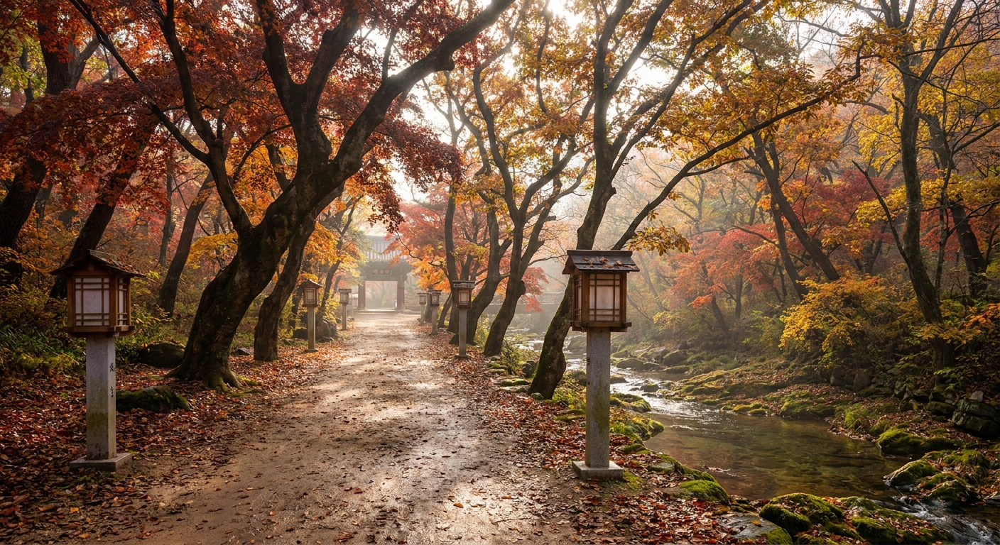
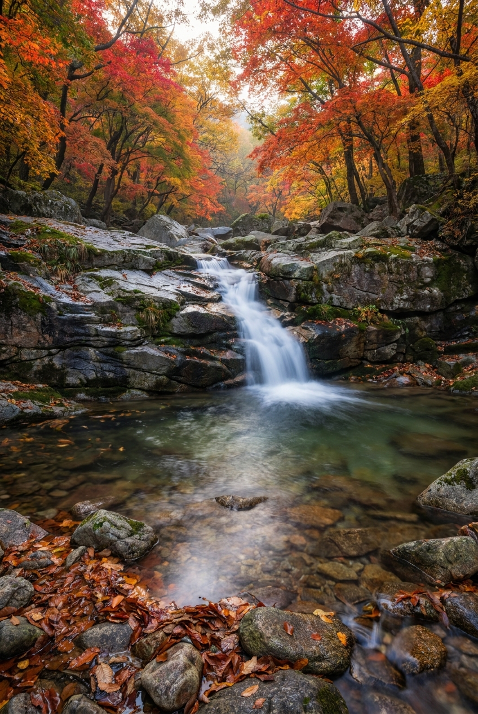
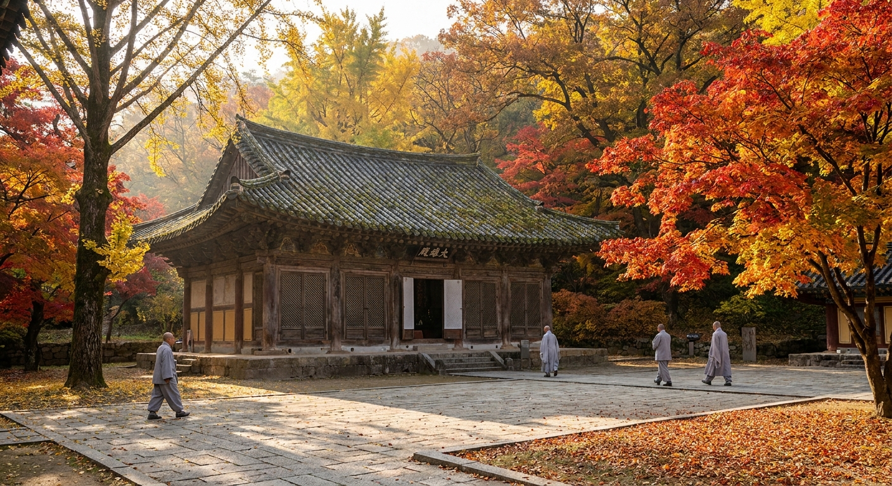

공주 갑사 가을 단풍길 언제 절정인가 — 계룡산 오리숲길 트레킹 코스와 동학사 코스 비교
예로부터 '춘마곡 추갑사(春麻谷 秋甲寺)'라 하여 봄에는 마곡사의 신록이, 가을에는 갑사의 단풍이 으뜸이라 불려온 충남 공주 계룡산 국립공원의 대표 단풍 명소입니다.
2026년 공주 갑사 일대와 계룡산 단풍 절정기는 10월 27일경부터 11월 4일 무렵까지 이어질 전망이며, 5리(약 2km)에 걸쳐 고목들이 단풍 터널을 이루는 오리숲길이 가장 화려한 빛을 발합니다.
문화재 관람료 폐지로 무료 입장이 가능하며, 대전 방면에서 접근하는 동학사 코스와 비교했을 때 갑사 코스는 경사가 완만하고 단풍 숲의 밀도가 훨씬 높아 가족 단위 가을 트레킹에 최적입니다.

고목들이 2km 단풍 터널을 이루는 공주 계룡산 갑사 오리숲길 전경 / AI 제작 이미지
01 | 왜 '추갑사(秋甲寺)'인가: 계룡산 최고의 가을 절경
조선 시대부터 회자되어 온 '춘마곡 추갑사'라는 격언은 계룡산 서북쪽 기슭에 깃든 갑사의 가을 풍광이 얼마나 빼어난지를 단적으로 보여줍니다.
계룡산의 기암괴석 봉우리들이 병풍처럼 둘러선 계곡 사이에 자리 잡은 갑사는, 수백 년 수령의 느티나무, 갈참나무, 단풍나무들이 계곡 물길을 따라 빽빽하게 군락을 이루고 있습니다.
동학사 방면이 화려한 상가와 계곡 암반 위주의 경관이라면, 갑사 방면은 깊은 원시림 숲길의 고즈넉한 정취와 오색 단풍의 깊이가 남다릅니다. 발걸음을 옮길 때마다 머리 위로는 붉은 단풍잎이 하늘을 가리고 발아래로는 바스락거리는 낙엽이 쌓여 오감을 만족시킵니다.
02 | 2026년 계룡산 갑사 단풍 절정 예측 시기
2026년 충청권 가을 단풍은 10월 중순 계룡산 정상인 천황봉과 삼불봉에서 첫 단풍이 관측된 후 점차 계곡 하단부로 번져가고 있습니다.
갑사 진입로인 오리숲길과 사찰 경내의 단풍 절정은 10월 27일부터 11월 4일경으로 예측되며, 11월 1일 전후 주말이 가장 찬란한 색채를 뽐낼 것으로 보입니다.
11월 초순에는 바람에 떨어진 단풍잎들이 용문폭포 계곡 물 위에 붉게 떠내려가며 또 다른 가을 서정을 만들어냅니다.
| 구간 |
고도 및 지형 |
2026년 절정 시기 |
특징 및 관람 포인트 |
| 천황봉·삼불봉 능선 |
해발 700~840m 암릉 |
10월 18일 ~ 10월 25일 |
기암괴석과 오색 단풍의 조화, 등산 전문 코스 |
| 삼불봉고개 ~ 금잔디고개 |
해발 500~600m 산지 |
10월 22일 ~ 10월 29일 |
완만한 능선길 참나무·단풍 숲 트레킹 |
| 용문폭포 ~ 갑사 구역 |
해발 250~350m 계곡 |
10월 26일 ~ 11월 3일 |
계곡 암반과 붉은 당단풍의 환상적인 반영 |
| 오리숲길 (주차장~일주문) |
해발 150~200m 평지 |
10월 28일 ~ 11월 5일 |
2km 고목 단풍 터널, 온 가족 걷기 좋은 길 |
03 | 갑사 오리숲길 코스 구간별 소요 시간과 트레킹 안내
갑사 주차장에서 출발하여 사찰 경내와 용문폭포까지 이어지는 트레킹로는 남녀노소 누구나 무리 없이 걸을 수 있는 무장애 명품 숲길입니다.
'오리숲길'이라는 이름은 주차장에서 사찰까지의 거리가 5리(약 2km)에 달한다고 하여 붙여진 명칭입니다. 길가에 도열한 고목들은 150년 이상의 수령을 자랑하며, 한여름에는 시원한 그늘을, 가을에는 불타는 듯한 단풍 터널을 만들어줍니다.
경사가 거의 없는 평탄한 흙길과 나무 데크로 조성되어 있어 편안한 복장과 가벼운 운동화 차림으로도 충분히 완주가 가능합니다.
🚶 갑사 오리숲길 추천 트레킹 단계
1. 주차장 식당가 출발: 향토 음식점을 지나 매표소 터 진입 (소요 5분)
2. 일주문 ~ 사천왕문 구간: 울창한 활엽수림 단풍 터널 걷기 (약 1.2km, 소요 20분)
3. 갑사 대웅전 및 경내 관람: 보물 철당간 및 부도탑, 삼신각 단풍 감상 (소요 20분)
4. 용문폭포 연계 산책: 갑사 뒤편 계곡을 따라 용문폭포까지 약 500m 추가 산책 (소요 15분)
5. 총 왕복 소요 시간: 사진 촬영 및 휴식 포함 약 1시간 30분~2시간 내외

갑사 경내 뒤편 맑은 계곡과 붉은 단풍이 어우러진 용문폭포 비경 / AI 제작 이미지
04 | 클릭 설계 비교: 갑사 코스 vs 동학사 코스 정밀 비교
계룡산 단풍 나들이를 준비하시는 분들이 가장 많이 고민하는 '갑사 vs 동학사'의 특징과 장단점을 한눈에 비교해 드립니다.
| 비교 항목 |
갑사 코스 (공주 계룡면) |
동학사 코스 (공주 반포면) |
| 대표 이미지 |
'추갑사(秋甲寺)' — 가을 단풍의 절대 강자 |
'춘동학(春東鶴)' — 봄 벚꽃으로 유명, 가을도 수려 |
| 지리적 위치 |
계룡산 서북쪽 기슭 (공주 시내 및 세종 서부 인접) |
계룡산 동쪽 기슭 (대전 유성구 및 세종 남부 인접) |
| 탐방로 난이도 |
오리숲길 2km 평탄한 완경사 흙길 (난이도 하) |
일주문에서 동학사까지 포장 및 완경사 (난이도 하~중) |
| 단풍 수종 및 분위기 |
수백 년 느티나무·갈참나무·당단풍 터널 (깊고 차분함) |
계곡 바위와 어우러진 단풍, 상가 인접 (활기참) |
| 주차 및 진입 여건 |
대형 주차장 완비, 상대적으로 진입로 덜 복잡 |
대전 근교 나들이 차량 집중으로 주말 진입로 극심한 정체 |
| 추천 대상 |
조용한 숲길 산책, 부모님·아이 동반 가족 탐방객 |
등산 연계(남매탑·삼불봉 산행), 대전권 당일 드라이브 |
05 | 산행 연계: 갑사~동학사 계룡산 횡단 종주 코스 안내
단순한 사찰 산책을 넘어 가을 단풍 산행을 즐기고자 하는 중급 이상의 등산객이라면 갑사에서 출발해 계룡산 능선을 넘어 동학사로 내려서는 횡단 코스를 추천합니다.
갑사 주차장에서 출발하여 용문폭포, 금잔디고개, 삼불봉(775m), 남매탑(상원사지)을 거쳐 동학사로 하산하는 코스는 총 거리 약 7.5km, 소요 시간 약 4시간 30분이 걸립니다.
계룡산의 상징인 삼불봉 능선에 오르면 발아래로 갑사 계곡의 붉은 단풍과 동학사 방면의 수려한 암릉이 한눈에 파노라마처럼 펼쳐집니다. 하산 후에는 시내버스를 이용해 출발지로 되돌아갈 수 있습니다.
🎒 가을 계룡산 종주 산행 필수 준비물
- 접지력 좋은 등산화: 암릉 구간 및 단풍 낙엽이 쌓인 바위 구간이 미끄러우므로 필수 착용
- 방풍 자켓 및 보온 의류: 산 아래는 포근하지만 해발 700m 능선부는 찬바람이 강해 체온 저하 주의
- 교통편 팁: 동학사 하산 후 300번 버스 또는 대중교통 환승을 통해 공주터미널을 거쳐 갑사로 복귀 가능

오색 단풍으로 둘러싸여 고즈넉한 가을 정취를 자아내는 갑사 대웅전 경내 / AI 제작 이미지
06 | 주차 요금 및 주차장 혼잡 회피 전략
공주 갑사 입구에는 국립공원 공용주차장이 넓게 조성되어 있습니다.
문화재 관람료는 폐지되었으나, 국립공원 주차료는 차량 규격에 따라 정액제로 부과됩니다. 승용차 기준 주차 요금은 비수기 4,000원 / 성수기(단풍철 포함) 5,000원 내외로 1일 정액 이용이 가능합니다.
단풍 피크 주말(10월 31일~11월 1일)에는 오전 10시 30분을 넘기면 주차장 진입 대기 줄이 길어집니다. 따라서 오전 9시 이전 입차를 목표로 출발하시거나, 만차 시에는 주차장 진입로 초입의 사설 임시 주차공간이나 인근 식당 주차장을 이용하고 식사를 겸하는 방법도 좋은 대안입니다.
07 | 공주 가을 당일치기 역사·자연 연계 드라이브 코스
갑사 탐방 후 하루 일정으로 공주의 백제 역사 유적과 가을 명소를 묶어 즐길 수 있는 추천 드라이브 동선입니다.
| 동선 구분 |
주요 경유 명소 |
소요 시간 |
주요 테마 및 볼거리 |
| 오전 (09:00~11:30) |
갑사 오리숲길 단풍 산책 및 용문폭포 |
약 2시간 30분 |
오색 단풍 터널 걷기와 사찰 경내 문화재 힐링 |
| 점심 (12:00~13:30) |
갑사 식당가 산채비빔밥 및 도토리묵 |
약 1시간 30분 |
향토 나물 무침과 바삭한 해물파전, 알밤 동동주 |
| 오후 1차 (14:00~15:30) |
공주 무령왕릉과 왕릉원 |
약 1시간 30분 |
유네스코 세계유산 백제 고분군 역사 탐방 |
| 오후 2차 (16:00~17:30) |
공산성 성곽길 가을 낙조 산책 |
약 1시간 30분 |
금강 물결을 내려다보며 걷는 성벽 단풍과 노을 뷰 |
08 | 공주 맛집과 공주알밤 가을 특산 먹거리
갑사 관광단지 상가에는 가을 산행의 피로를 풀어줄 맛깔스러운 산채 요리 전문점들이 즐비합니다.
대표 메뉴는 계룡산에서 채취한 자연산 버섯과 나물을 듬뿍 넣은 산채비빔밥과 버섯전골입니다. 1만 원 안팎의 가격으로 대여섯 가지 이상의 정갈한 산나물 반찬이 함께 나와 건강하고 든든한 식사를 즐길 수 있습니다.
또한 공주는 전국 최고의 밤 산지로 손꼽힙니다. 가을 수확철을 맞아 갓 구워낸 공주 군밤과 알밤 빵, 밤파이는 필수 디저트입니다. 상가 곳곳에서 판매하는 햇밤 한 봉지를 사 들고 숲길을 걸으며 맛보는 재미도 쏠쏠합니다.
09 | 갑사 방문객 핵심 FAQ 정리
Q1. 휠체어나 유모차로 오리숲길 탐방이 가능한가요?
A1. 네, 갑사 오리숲길은 경사가 완만하고 단단한 흙길과 나무 데크로 연결되어 있어 유모차나 휠체어 이용이 매우 수월합니다. 계룡산 국립공원 내에서 가장 보행 약자 친화적인 코스입니다.
Q2. 반려견 동반이 가능한가요?
A2. 국립공원 자연공원법에 따라 국립공원 탐방로(오리숲길 및 사찰 경내 포함)는 반려동물 출입이 엄격히 금지됩니다. 적발 시 과태료가 부과될 수 있으니 주의하시기 바랍니다.
Q3. 대중교통으로 가는 방법은 어떻게 되나요?
A3. 공주종합버스터미널이나 공주산성시장 앞에서 320번 시내버스를 타면 갑사 주차장 종점까지 약 40분 만에 도착합니다. 배차 간격은 약 1시간~1시간 30분입니다.
#공주갑사단풍
#추갑사
#갑사오리숲길
#계룡산단풍절정시기
#갑사동학사비교
#용문폭포단풍
#공주가을가볼만한곳
#공산성연계
#가을트레킹코스
#충남단풍명소